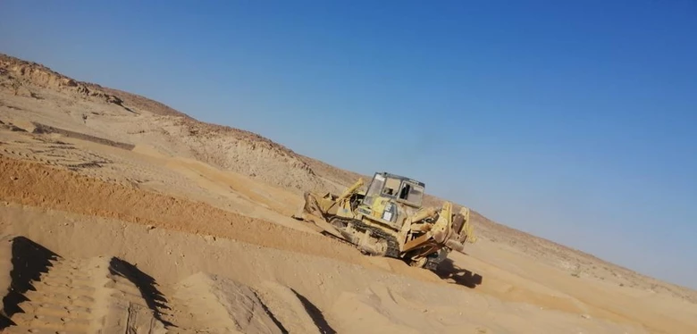
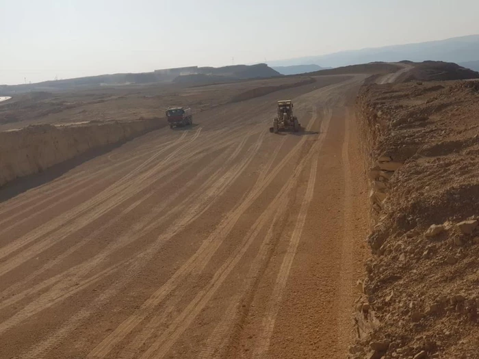
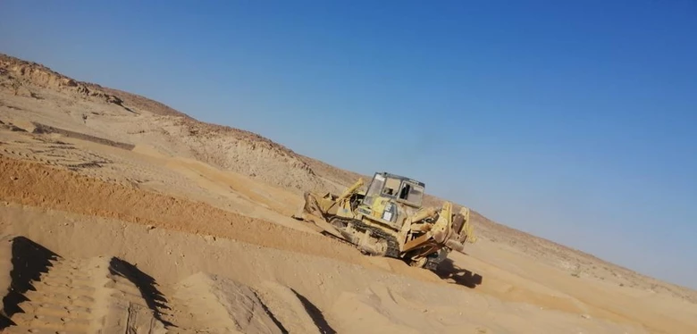
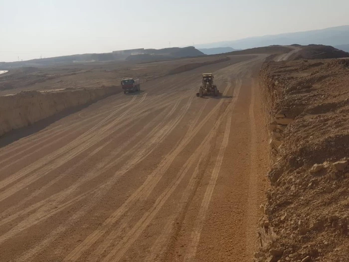

Developing Sheikh Abdullah Mutlaq Al-Qurini's Plans
Implementing the main canal of the Wadi El-Salli project, affiliated with Sercon Company.
Supplying basic materials to the Wadi Namar project of the Saudi Salco Company
Implementing the works of the flood and sewage network in the Awj project with Al-Ajaimi Company
Implementing interlock and balcony works for the Shams Al Riyadh project, affiliated with Crete Company
Implementing road works for the Digital City project of Al-Ajaimi Company
Implementing various road works in the Mahdia project of the Riyadh Municipality with Turaif Al Arabiya
Implementing the interlock and balcony works of the Roshen project, affiliated with Al-Gedrawy Company
Implementing road works in the Future Project with Al-Ajaimi Foundation
Implementing garden works in the Al-Rush project with Astra Company
Implementing sewage network works with Al-Rawaf Company
Implementing water network works with the Basic Gate Company
Implementing irrigation network works with the Basic Gate Company
Design and implementation of the largest park in Al-Kharj Governorate
Design and implementation of the telephone network with Al-Rumaih plan in Al-Majma'ah Governorate
Implementing network works in the King Salman Energy City(SPARK) project with Aramco
Implementing gardens and sidewalks works in the Green Riyadh project with Marco Company
Implementing sidewalk works in the Riyadh neighborhoods development project with Al Yamamah Company
Implementing telephone network work with the Indian company affiliated with STC


 


